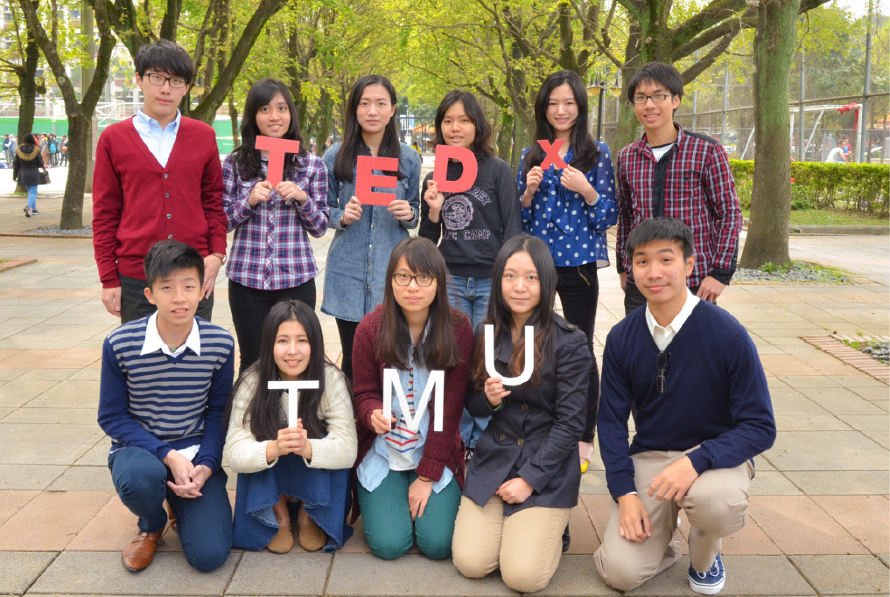
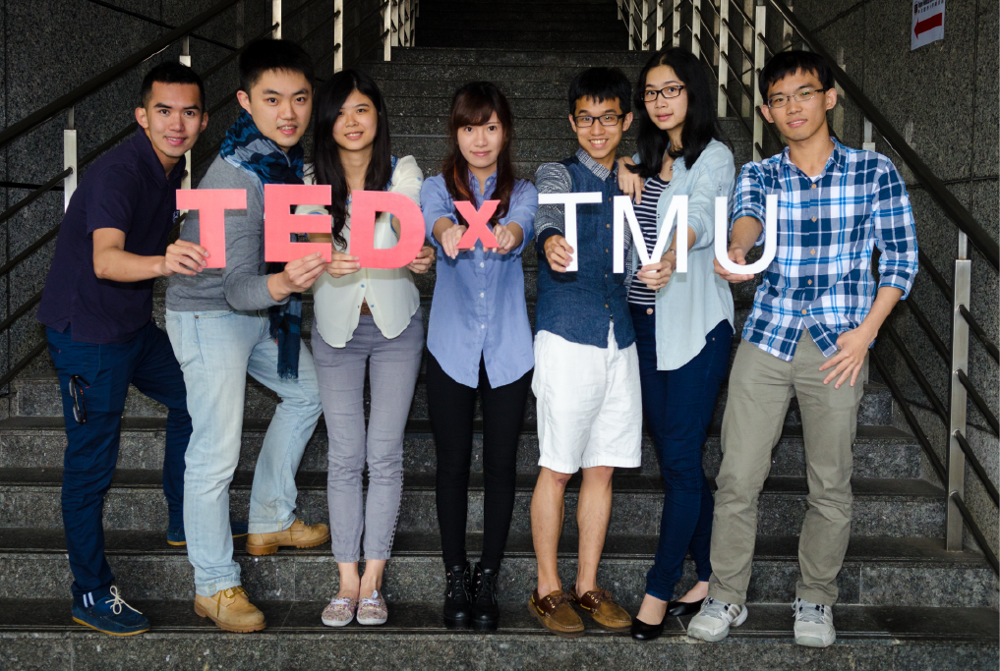
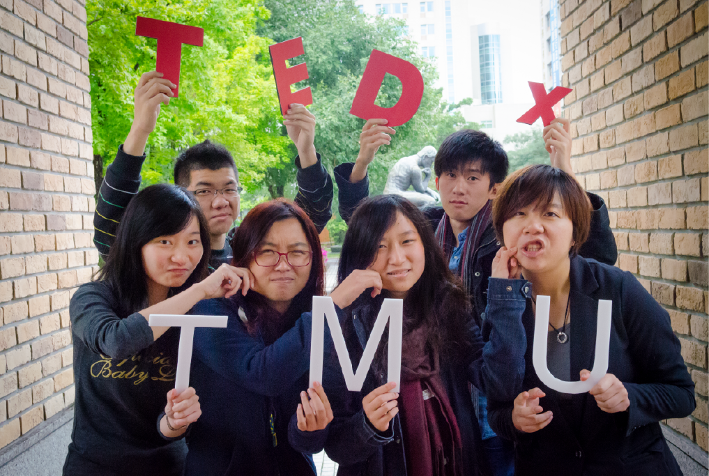

Hello, We Are
TEDxTMU
關於我們
TED是全球最具創意與影響力的大型聚會與知識分享平台，TED分別代表Technology、Entertainment、Design。1984年由建築師Richard Wurman在美國矽谷創立，集合設計界、科技界、學術界等各界人才齊聚一堂分享各自最有遠見與最具創意的想法，而獨創的「18分鐘演講」更是改變傳統演講的效果透過18分鐘內更快傳達故事與想法的核心。
在2002年媒體創業家Chris Andreson買下TED品牌。他將TED納入他的非營利組織 Sapling Foundation，並且從2006年開始將過去的演講內容放到TED.com，讓全世界可以免費收看，並且結合社群媒體的力量，廣受世界各地歡迎。
更多關於 TEDx
TED在2009年開放品牌授權（open licensing）由TED官方授權認可讓全世界有心有能力的人用 TED 的模式和在其品牌規定下，來經營一個TED大會。這個由會員自行策劃，以開放式的精神、實體活動，搭配網路的分享平台，讓更多人參與。
TEDx後面主要是以城市名、地方名、學校名為主，讓創意之聲，在各城市遍地開花，使好點子、前瞻性的想法，得以廣為傳播。至今全球每月已有一千多場TEDx在世界各地發生，從貧民窟到大都會，從世界角落到台灣每個地方都以獨特的方式用同樣開放傳播好想法的精神改變當地。
更多關於 TEDx Program
TEDxTMU成立於2013年校園，在2014年2月獲得TED官方認可TEDxTMU的願景是希望透過TEDx的舞台激發學生們的創意，透過故事的感動喚起你我的行動，讓校園更進步，也藉由這個平台的力量，傳達好故事，讓我們對於所處的時代環境付出更大的責任TEDxTMU 秉持 TED talks一貫精神將 ”Ideas worth spreading“ 的觀念帶進北醫。一群求知若渴的學生，能透過講者分享他們獨到的見解和不凡的生命故事，開啟一扇窗，對於所處社會更勇於思考且充滿關懷。
年會｜感知
最明顯最重要的現實，通常也是最難以看見和講述的。
-David Foster Wallace
年會主題
看過電影真愛每一天（About Time）嗎？劇中有對擁有穿越時空能力的父子，這個父親給兒子的幸福祕訣是：將每一天重新過一遍。再過一遍平凡的日子，你會發現曾經忽視的人事物，並非只是理所當然的存在，而是一點一滴對你生活造成影響。怎樣去感受這個世界，決定你對世界作出怎樣的回應，然後世界必會有所迴響，而這些迴響都建構起你的人生，你很難先知先覺，通常都是後知後覺，但絕對不要不知不覺！
年會講者
張瑋軒
女人迷 womany.net 共同創辦人暨執行長，擁有倫敦政經學院 (LSE) 性別與媒體碩士學位，出過一本倫敦旅遊書，以二小姐為筆名作為誠懇寫字人，熱愛生命享受每一秒活著的時刻。經歷過電腦 286/ 386 以 dos 下指令的時代，喜歡線上遊戲，熱愛網路購物，鑽研印刷術興起的近代早期歷史，深切相信網路、手機是現在與未來交界的重要轉捩點，正在透過女人迷 womany 改變很多人的生活和思考方式。相信 “女人千變萬化，而你獨一無二 (women are many, and you are the only)”，以多元觀點文章和上萬網友討論，致力喚起並提升亞洲女性意識自覺，並體現於三種層面：身體意識、經濟自主及思想自由。
潘建志
潘建志醫師畢業於臺北醫學大學醫學系，現為台北市萬芳醫學中心精神科主治醫師。除了在醫學上的專業外，他也是知名的評論家和部落客，經常評論政治與重要時事。在大學生活時，他便參與了野百合學運，並發現醫生常只專注於書本上的問題，而忽略了公眾事務。所以，他鼓勵學生多關注社會上的人事物，並勇於質疑政府政策。他說：「醫生應該踏出他們的舒適圈，應該要無所畏懼。」更多詳情，可上潘建志醫師部落格。
牛爾
牛毓麟，又稱牛爾，為多家知名美妝用品品牌創辦人，創造20億業績的網路美妝品牌。畢業於臺北醫學大學醫事技術系，自醫技系畢業後投身美容界達22年，起初以簡單、實用的DIY保養品掀起市場廣大的反應，也出書教導民眾應如何進行日常保養，並從2002年開始從事化妝品研發工作，多次親赴國外，近距離貼近各大化妝品牌實驗室，了解各國不同美妝文化，目前為各大化妝品牌美容講座特約講師。 從一個為了推銷化妝品的小業務，到陸續擔任美容講師、行銷公關、彩妝師、美容書作者、專欄作家、從事品牌研發等...。
瓦歷斯‧諾幹 Walis Nokan
臺灣泰雅族作家，臺中師專畢業，目前任教於國立中興大學。擅長新詩、散文、報導文學以及文化論述，為原住民指標性作家。多以原住民為寫作對象，以銳利的筆法，批判臺灣社會對自然人性的戕害；也以傷感有情的筆法，紀錄逐漸被遺忘的原住民的傳統風俗與人文歷史。曾獲聯合報文學獎、臺北文學散文首獎等諸多獎項。投身於原住民運動，並且積極的投入社會調查中，是一個活力旺盛、行動積極，具有相當知名度及影響力的原住民文學創作和論述者。
胡庭碩
台大法律系，SIB社會創新巴士共同創辦人，社會企業推廣講師。他罹患「脊髓性肌肉萎縮症」行動不便，是俗稱的「漸凍人」，也是單親家庭長大的孩子，由母親獨自撫養。母親辭了工作自己開公司為了照顧兒子，後來公司倒閉，母子倆過著接近三餐不繼的生活。但他更從中學會惜福。十五歲起在補習班半工半讀，後來放棄補習班高薪，為了更高的理想:幫助每個人，尤其相對弱勢者，來創造自己的價值。而他相信，社會企業是絕佳途徑。
洪朝貴
電腦科學背景出身的他，特別關注使用者對於電腦軟體的自由與自主性，致力於反對企業壟斷、封閉格式與推動台灣自由軟體，使更多人意識到自由軟體其在知識傳播所佔的意義，被稱為「台灣自由軟體的先驅者」。近期更以「注意力經濟」這個概念來討論網路上的種種現象，與舊有的「智慧財產權」產生了奇妙的矛盾，其中拿捏的平衡，十分引人思考。
Dr. Bruno Walther
Dr. Bruno Walther來自德國，為英國牛津大學博士，主要研究領域包括：遷徙鳥類的行為、生態及保育、物種分布模式、寄生蟲生態、全球生物多樣性監測等。目前受聘為台北醫學大學公共衛生學系客座教授，教導環境科學與永續發展等課程。同時，他也任職位於南投縣集集鎮的行政院農委會「特有生物研究保育中心」。Bruno是網站Crisis of Life.的負責人之一，網站內容專注於採訪世界上具權威的科學家關於「生物多樣性的威脅與價值」的議題，亦藉此鼓勵民眾參與保護，並重視不同的物種與生態系統。
張晏鐘
畢業於國立台北科技大學電腦與通訊研究所。在大四時受到電影 「練習曲」的啟發而挑戰十天環島，此經驗為他埋下了從台灣騎車到國外的種子，而綠色奇蹟的芽也從此成長茁壯。長途腳踏車旅行並不少見，但張晏鐘不只是挑戰自己的意志力與體力，他也立志將環保及全球暖化的議題分享給更多人知道。從北京到梵蒂岡騎車共花了210天，里程總計16,332.6公里，並跨越了13國的國界。沿途他門教導當地民眾環保的重要性。而從中他體驗到友情無國界，他在每一天種植一棵樹，宣導他們對環保的理念與執著並紀念在路上結交的朋友。
徐凡甘
二十二歲，2013年總統教育獎得主，NTU Net Impact 不同凡響社幹部，曾任台大證券研究社社長、活動「城市浪人」創辦人。總是以「平凡的凡，甘甜的甘」來介紹自己的名字，相信凡事心甘情願去做，必會苦盡甘來擁抱結果。國中時因急性腎衰竭開始漫長艱苦的在學校與洗腎中心往返，加上家中經濟狀況拮据，但他不甘成為逆境的順民，徐凡甘付出常人無法想像的辛苦與堅強，將自己的人生轉化為前進的力量。投身公益與社企，關懷身邊需要改變的目標，以行動替社會貢獻一己之力。他是徐凡甘，苦旱過後歷經甘霖所結出豐碩的果。
對於這個世界我們不但要用心感受她的存在，也要知曉她的過去、現在、未來
系列活動
公民咖啡館
公平貿易
日期：5/2 Fri
時間：18：00～20：30
講師：余宛如 生態綠咖啡館 創辦人
從鑽石到咖啡館，公平貿易在全球開始風行。想知道什麼是公平貿易認證？
想知道公平貿易在台灣的發展？或者你想要從公平貿易了解台灣在地農業所遇到的困境？來公民咖啡館，讓你喝咖啡，改變世界。
土地正義
日期：5/26 Mon
時間：18：30～20：30
講師：張國城
你是否也感覺，你所關心的時事和議題，往往是主流媒體幫你決定的？前陣子紛紛擾擾的都市更新，土地徵收議題，雖然隨著官司落幕而沉寂，但你對於何謂土地正義，有了答案了嗎?當建商與居民各有各的道理，什麼才是the right thing to do?我們邀請到張國城老師，帶領我們用全新的視角解讀這個議題。來跟我們一起將眼光放遠，從國家立法精神，從社會規範制度，從土地的意義來討論。
五感工作坊
影像會說話
日期：4/30 Wed
時間：18：30～20：30
講師：龍南.以薩克.凡亞思
我們眼睛所留下的，只是那一瞬間，而影像能記下我們所不能重播的畫面，捕捉我們所忽略或是看不到的現實。紀錄片不同於其他影像作品，所拍攝的人事物是真實發生的。世界上許多忽略的看不見的問題隨時在發生，我們沒有這麼多眼睛替我們看見，抑或是看見卻忽略，我們想知道在作品裡，導演是如何鋪陳這故事？為什麼撒下一些鏡頭外的現實，對於這件「真實發生的事」有沒有另外一種說法？
音樂翻轉人生
日期：5/5 Mon
時間：18：30～20：30
講師：唐青
夢想：是我們生活的一部分，對於音樂創作人而言，音樂夢想，可能是他們生命的全部，在國際浪潮中，為自己的族群創作音樂變得更加困難，但近年來，創作是一種精神，越來越多獨立音 樂人利用音樂繼續蔓延理念。感知系列講座人類最基本的五感:聽覺、視覺、嗅覺、味覺、觸覺，在現代網路與科技進步下已慢慢被麻痺，讓我們藉由講座對談的實際體驗與互動，開啟塵封已久的受器開關,面對社會議題的關注與思辯，也能由最基本的感覺啟發，達成進一步知識上的建立與澄清。讓我一起透過講座對談與公民咖啡館的沙龍是討論，重新以知識啟發感知，以感知體驗思考。
Insideout
時間：五月初至五月中
地點：北醫階梯廣場、校園角落
Inside Out 計畫始源於法國藝術家JR，想要藉由張貼藝術為世界帶來些改變旨在於以街頭藝術的方式將個人肖像及故事轉化為理想的 畫筆，讓每個人都有機會透過這塊畫布向世界發聲。
Before I die
時間：四月初至五月中
地點：北醫體育館前、醫綜後棟
藝術家Candy Chang在社區發起，希望藉由黑板讓大家寫下自己的願望、讓我們的公共空間可以更佳反映出，什麼對我們是重要的，無論是以個人的角度，或是以社群的角度隨著有愈來愈多的方法，可以分享我們的希望、恐懼及經歷，我們四周的人不但可以幫助我們創造更美好的地方，還可以幫助我們活出更好的生命。
策展團隊
Our Mission
透過TEDx的舞台激發學生們的創意，透過故事的感動喚起你我的行動讓北醫更進步，也藉由這個平台的力量讓我們對於所處的時代醫療圈有更大的改變。
- 
- 
- 
策展人 Organizer
Organizer
謝任堯
Co-curator
潘奕穎
策展部 Curatorial Team

策展部長
鄭奕丘
策展部
吳亭嬑
策展部
劉本楙
策展部
賴昱任

策展部
李雅巽
策展部
董家君
策展部
李芃諭

策展部
顧效羽
策展部
王嵐
策展部
李樂怡
策展部
連育楷

策展部
孫春雅
設計部 Design Team
設計長
甄沛勤
秘書
古小千
設計部
李奕瑋

設計部
陳妤
設計部
陳怡蓁
設計部
林瑜萱
公關部 PR Team
公關長
王耀邦
財務長
陳韋君